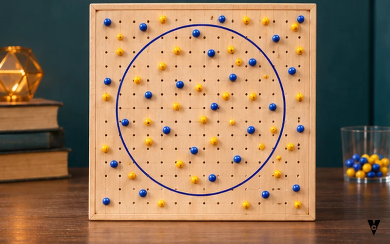
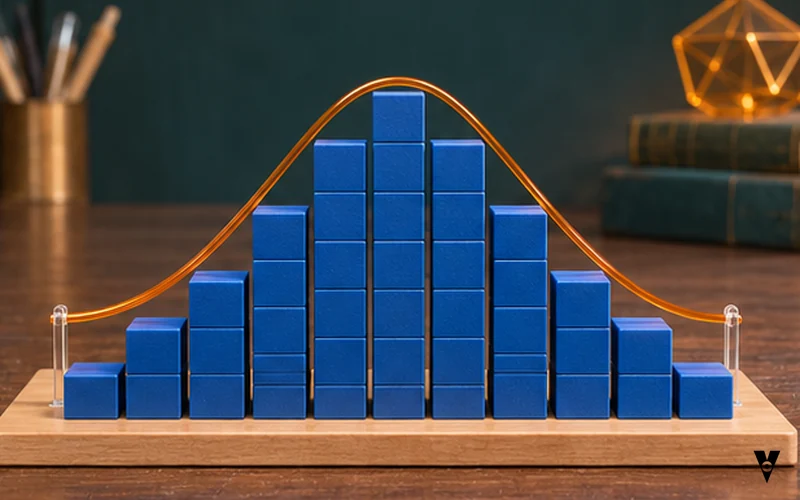

Simulaciones de Matemáticas · Secundaria y Bachillerato
Álgebra
Cálculo
Probabilidad
VikLaboratorio de probabilidad
Experimenta con dados y compara distribuciones discretas y continuas.
Dados
Repite tiradas y compara las frecuencias observadas con las probabilidades.
Monedas
Lanza monedas y observa cómo cambian las frecuencias de cara y cruz.

Pi con monos
Estima π al comparar cuántos puntos caen dentro y fuera de un círculo.

Distribuciones binomial y normal
Cambia los parámetros y calcula probabilidades puntuales y acumuladas.
Varios
No hay simulaciones que coincidan con la búsqueda.